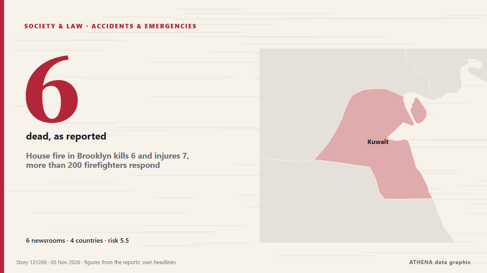

Аварии и ЧП
СпонсорПри поддержке  Cybernetics and Artificial Intelligence Lab Welcome to the Cybernetics and Artificial Intelligence Laboratory, established at the Department of Business Administration of the National and Kapodistrian University of Athens. The lab is headed by Professor Dimitrios Thomakos. The lab aims to do research that can be published in top venues. Our research uses tools and methods of Artificial Intelligence, and lies in the following areas: - Forecasting - Decision making - Cyber security - Finance We are always looking forward to collaborating with exceptional students!
Cybernetics and Artificial Intelligence Lab Welcome to the Cybernetics and Artificial Intelligence Laboratory, established at the Department of Business Administration of the National and Kapodistrian University of Athens. The lab is headed by Professor Dimitrios Thomakos. The lab aims to do research that can be published in top venues. Our research uses tools and methods of Artificial Intelligence, and lies in the following areas: - Forecasting - Decision making - Cyber security - Finance We are always looking forward to collaborating with exceptional students!
| 23 окт. | 0 |
|---|---|
| 24 окт. | 0 |
| 25 окт. | 0 |
| 26 окт. | 0 |
| 27 окт. | 0 |
| 28 окт. | 2 |
| 29 окт. | 0 |
| 30 окт. | 2 |
| 31 окт. | 2 |
| 1 нояб. | 4 |
| 2 нояб. | 3 |
| 3 нояб. | 3 |
| 4 нояб. | 6 |
| 5 нояб. | 2 |
Заголовки приводятся на английском языке, как они были опубликованы.

House fire in Brooklyn kills 6 and injures 7, more than 200 firefighters respond
NEW YORK, Nov 5, (AP): Six people died in a fire that barreled through a two-story home in New York early Thursday and seven others were injured, including three firefighters, t... из Arab Times
After months lost at sea on a small boat, 5 people are rescued in the island nation of Kiribati
Authorities say five people, including two children, have been rescued in the South Pacific island nation of Kiribati after three months drifting at sea in a 20-foot skiff. из ABC News (International)
Crucial part of Florida Learjet found miles from crash site
An NTSB member said that the tail component was found in three parts within a range of 1.3 to 3.8 miles from the crash site. из The Independent
Questions arise over emergency treatment given to Spanish soccer player in fatal collision
While Spain mourns the death of a soccer player who suffered a cardiac arrest after an on-field collision, the emergency medical treatment he received is falling under scrutiny. из CBC News
Meloni welcomes Switzerland saying it won't recoup Crans-Montana medical expenses
(ANSA) - ROME, 04 NOV - Premier Giorgia Meloni expressed satisfaction on Wednesday after being notified by Swiss President Guy Parmelin that Bern has decided not to seek to recoup the medical… из ANSA English
Tenerife Striker, Jesus de Miguel Dies After Collision In Match
Jesus de Miguel Alameda collapsed after goalkeeper Jesus Owono struck him in the chest with his knee while clearing a long ball, and de Miguel suffered a cardiac arrest the following day. из Free Malaysia Today
Spanish transport minister resigns days after deadly train crash
At least 69 people were killed and dozens injured in the collision south of the capital, Madrid. из BBC News
Woman, 20, identified as co-pilot in plane that crashed in Florida killing 9 people, got her pilot's licence in high school
Family of four, two close friends and nanny also died in crash as pilot identified as 55-year-old Jeff Gregory Family members on Monday identified a young Florida pilot as one of nine victims of a… из The Guardian
Hapag-Lloyd and ONE expect most Espirito Santo Express cargo severely damaged or lost
Hapag-Lloyd and ONE relayed Seaspan's assessment on 30 October that most cargo on the fire-damaged ship is severely damaged or lost. из Container Magazine
Spain's transport minister resigns after 69 killed in train crash disaster
Dr Marta Shahbazi was one of 69 people killed in the devastating crash last week. из Birmingham Mail
Stampede case: IHC grants protective bail to TikToker
ISLAMABAD: The Islamabad High Court (IHC) granted protective bail to TikToker Muhammad Ansar Jatt alias “Mr Patlu”, in a case about a stampede at his ‘mehndi’ function in Sialkot, which claimed two… из Business Recorder
1 Dead, 2 Injured After 2 Helicopters Collide On Mount Everest
Two helicopters collided near Mount Everest during Nepal's peak trekking season, killing an Indian tourist and injuring passengers and pilots. из Simple Flying
Helicopters collide below Mount Everest base camp, killing 1 person and injuring 2
Two helicopters collided near Mount Everest’s base camp, resulting in one fatality and two injuries. из Arab News
2 foreign nationals die of suspected electrocution in Bengaluru 5-star hotel’s pool
On Friday evening, two foreign nationals from Germany and Slovakia died from suspected electrocution in a hotel swimming pool. из Times of India
New Zealand vs India: Devon Conway ruled out of 1st ODI after training collision with Henry
New Zealand skipper Santner indicated that Tim Seifert, the back-up batter in the squad, would be a direct replacement for Conway. из Sportstar
Pilot's chilling last words as jet crashes to ground in Florida, killing nine
The pilot could be heard screaming as she spoke to air traffic control about the situation. из Chronicle Live (Newcastle)
Five teenagers stabbed at Halloween party
Five teenagers have been seriously injured after being stabbed at a Halloween party, police have said. из MyJoyOnline
Russian attack sparks fire at transport infrastructure facility in Kropyvnytskyi
Firefighters in Kropyvnytskyi have extinguished a fire at a transport infrastructure facility caused by a Russian attack. из Ukrinform (English)
Bahamas-Bound Jet Crashes in Florida, 9 Dead
A USD$2 million business jet carrying nine people has crashed in Florida. из Sydney Morning Herald